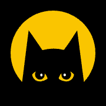

ML & Performance Optimization Intern · Alice & Bob, Paris
Built a GPU-accelerated, differentiable steady-state solver for cat-qubit simulations, now part of the open-source Dynamiqs library.
ML / Optimization team
- Fully differentiable steady-state solver in JAX for large bosonic systems (cat qubits), based on preconditioned GMRES.
- Asymptotic speed-up from O(n⁶) to O(n³), with a much smaller memory footprint than the previous approach.
- Benchmarked on H100 and L40S GPUs; automatic differentiation makes it usable inside gradient-based optimization workflows.
- Merged into the Dynamiqs library and published as arXiv:2608.30860 with G. Beugnot, R. Robin and A. Tilloy.